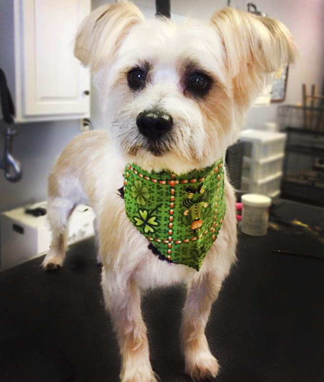
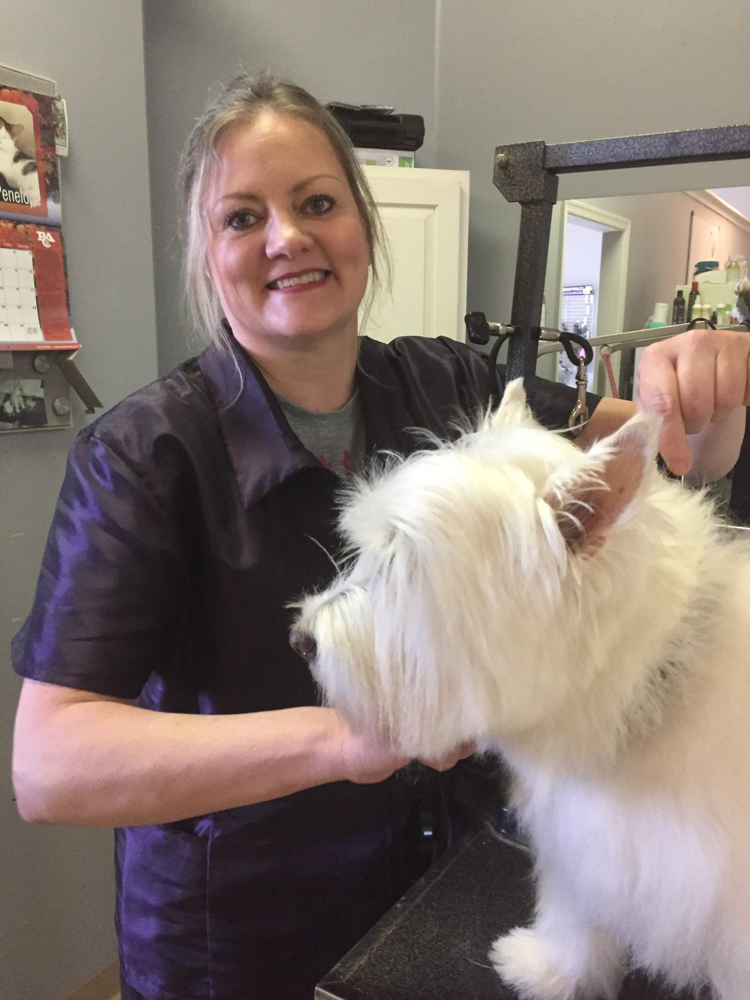
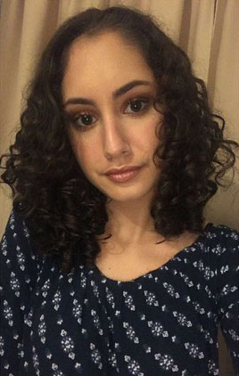
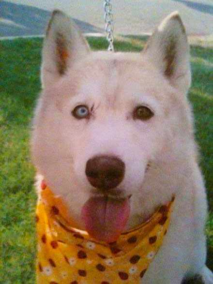

About Us

🐾 At Glad Wags, we use only the highest quality shampoo. We have state of the art equipment, an open atmosphere offering a cage free option making your pet’s visit comfortable. We offer special spa treatments including but not limited to: face and paw whitening; facial scrubbing; paw pad; flea treatments; and deep conditioning of coats. Before the grooming process even begins, we evaluate each dog’s coat to determine specific needs. During an average grooming session, we clean ears - pluck the hair inside the ears, if necessary - wash each dog twice and then condition their coat. We dry each dog with our high velocity dryer - WE DO NOT CAGE DRY - which removes all layers of the dead coat; leaving the client with a shed-free dog. Finally, we shave the paw pads, clip the nails, shave the sanitary area and groom the dog’s body to the clients’ liking. 🐾
🐾 We also do a maintenance groom (a bath & trim) for dogs that do not need the body groomed or shaved. It includes everything a full groom does, except we do not groom the body! A third option we offer is for dogs that only require a bath (without needing a groom) which includes nails clipped and ears cleaned.
Ask about our Doggie Day Care and our self-service by appointment. We also have convenient parking for our clients so your pets have an easy entrance and exit from our shop! We schedule by appointment to suit your needs. If there are any questions, please feel free to call the salon: (732) 483-9003! 🐾
| Jane |
|  The old cliché - If you love what you do, then you'll never work a day in your life - could not be any truer. As the owner / operator of Glad Wags Grooming Salon, not only do I get to work with animals every day, but I get to work with others who are just like me. We share a love for animals and seek to be the best for each of your pets.
My love for animals was instilled in me at a very young age by my mother and grandmother. I cannot remember a time when we did not have family pets when I was growing up. We had dogs, cats, birds and fish – all of which were a part of the family. This love turned into a career very quickly. I started grooming my own pets at home – all four of my dogs. Then I groomed my families’ pets, which then lead to the neighbor’s pets. Grooming became a part-time job and from this, I decided that I wanted to open my own business. To master my skills as a pet stylist, I participated in the advanced training program at The Paragon School of Pet Grooming in Grandville, Michigan, where I continued to develop my skills and knowledge in the art of pet styling. After completing my training, I opened Glad Wags in October 2010 which, I consider to be one of the happiest day of my life. I often think of my mom while I'm at work and know how happy and proud she would be that my job is working with animals; and to be able to help them with their special needs whether they are a puppy, frightened, sick or just getting older. I currently own and love four dogs: two puppies, Ronnie and Gracie, and two seniors, Coco and Lil’ Eddie. While the pups love coming to work with me, my seniors prefer to rest at home.
Each pet gets tender loving care (TLC). This is not only the way I work but it is the energy we have each and every day, through every appointment and in every "Hello." I so look forward to meeting new clients and their tail-wagging friends! |
| Jeanine |
Jeanine is a graduate of the Ohio State University with a degree in Business. After a boring and tedious career in banking, she decided to improve her life and find a career that she loved. Growing up she was always surrounded by dogs and puppies as her family bred Schnauzers, so working with animals was the perfect fit. Within months after attending the North Jersey School of Dog Grooming she was able to open her own salon and make these wonderful pups she so loved, her life’s work. Now after 14 years of grooming, Jeanine would like to give other dog lovers the same opportunity. She is the proprietor of the Brighton School of Dog Grooming at Glad Wags, training students for their own exciting careers. Enroll in our school at Brightondog.com and in months, you too, will transform your life |
| Brianna |
|  Brianna has been a bather with Glad Wags for three years and recently received her online grooming certificate at Penn and Foster. She is now grooming in our Brighton School of Dog Grooming apprentice program and is doing an outstanding job! She is a huge dog lover and is the proud owner of 11 Shitzus and 3 English Bull Dogs. She enjoys her big family. Her love of dogs and her big heart is evident in her dedication and kind, gentle care toward all of our customers. |
🐾 In Loving Memory of: Willy 🐾

Willy was our wonderful 16 year old mascot. She loved greeting all dogs and made them feel right at home. She was like a mother to each pet and was part of the store from the very beginning.